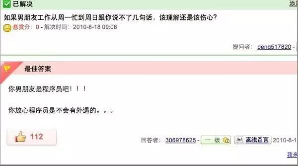

プログラマーの兄貴がお見合い番組で女性ゲストに全員ライトを消されたらしい？ 多くのプログラマー兄さんたちは納得いかない！ プログラマーに嫁ぐのが悪いって誰が言った？ いいかどうかは最後まで見て分かる、彼らにはこんな素晴らしい資質があったんだ！！
1、執着
ある女神：この掲示板の人たちを全員喧嘩させられたら、今夜あんたについて行ってあげる。
プログラマー：PHP言語は最高の言語だ！
（掲示板は大騒ぎになり、あちこちで喧嘩が始まった）
ある女神：あんたには降参だわ、さあ行きましょう、何でも好きなことしていいわよ。
プログラマー：今日はダメだ、彼らを必ず説得するんだ、PHP言語が最高の言語だと。
2、正直
私は苦しいプログラマー。ある日、徹夜に近い残業をして、眠くて目も開けられない状態だった。上司が心配して、夜食を食べないかと聞いてくれた。私は機嫌悪く「夜食はいいです、寝かせてくれればそれで十分です」と言った。うちの上司は女性で、顔を赤らめて「嫌だなあ」と言い、そしてどんどん近づいてきた。私はとても緊張した。まさか彼女に私のプログラムのバグを見つけられたのか？
3、忠誠
夫は絶対プログラマーにするべき！
なぜ？
金はあるし口数は少ないし早死にするし、浮気する時間もない···

4、言うことを聞く
妻がプログラマーの夫に電話した：「帰りに途中で肉まんを一斤買ってきて。もしスイカを売ってるのを見かけたら、一つ買ってね。」
その夜、プログラマーの夫は一個の肉まんを手に家に入った……
妻は怒って言った：「なんで一個しか買ってないの？！」
夫が答えた：「スイカを売っているのを見かけたから。」
5、 親切
ある人がスレを立てた：「皆さん、私はプログラマーになりたいのですが、何か注意することはありますか……」
あるプログラマー：「仕事が終わったら詳しく教えてあげる……」
そして…… その後は何もなかった
6、義理堅い
プログラマーの友人に1000借りた。彼は「24もっと貸してやるよ、ちょうどいい数字になるように」と言った。
7、細心
プログラマーA: 「ユーシャンロースー丼にするけど、君は何にする？」
プログラマーB: 「ゴンパオジーディン丼。」
プログラマーAは注文メニューに書いた：
ユーシャンロースー丼 1
ゴンパオジーディン丼 1
プログラマーB: 「やっぱり牛肉麺にする！」
プログラマーAは注文メニューを修正した：
ユーシャンロースー丼 1
// ゴンパオジーディン丼 1
牛肉麺 1
8、教養がある
あるプログラマーは退職後に書道を始めることにし、高額で文房四宝を買った。ある日、食後に突然風流な趣味が湧き、硯で墨をすり、紙を広げ、上等の白檀のお香を焚いた。しばし精神を落ち着け、一気に筆を揮い、厳かに一行書き下ろした：hello world！
9、一途
プログラマーはとても一途だ。例えば彼らの読書の歩み：x言語入門 —> x言語応用実践 —> x言語ハイレベルプログラミング —> x言語の科学と芸術 —> プログラミングの美 —> プログラミングの道 —> プログラミングの禅 —> 頚椎症リハビリガイド。
プログラマーにはこんなに多くの長所があるのに、誰も知らず、まさかこんな扱いを受けるとは。あなたの周りの一人ひとりのプログラマーを大切にしてください、本当に！
出典：ネット
編集：菜鸟教程